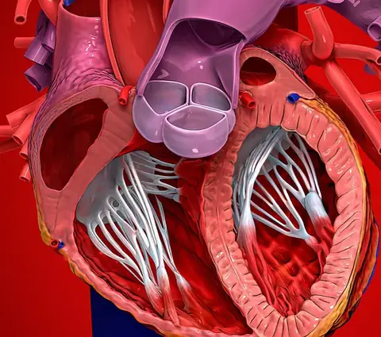
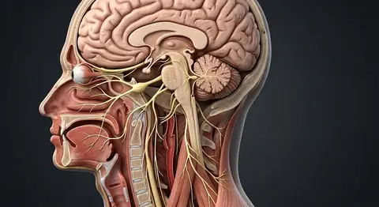

Corpus / anatomy blog & study articles
In-depth anatomy articles, reference tables and exam guides.
Explore anatomy study articles covering body systems, individual structures, foundational terminology, and regional clinical correlations—each connected to our 74 interactive chapters.

Human Heart Layers, Chambers, Valves & Conduction PathsCardiovascular · Study Guide↗Latest anatomy study articles
Cardiovascular · Study Guide · 7 min readHuman Heart Layers, Chambers, Valves & Conduction PathsExplore the human heart wall layers, four chambers, atrioventricular and semilunar valves, coronary arteries, and the SA-to-Purkinje electrical conduction. Foundations · Anatomy · Study Guide · 5 min readAnatomical Planes and Directional TermsAnatomical Planes and Directional Terms. Read the complete guide, references, disclaimer, and five answered questions.
Foundations · Anatomy · Study Guide · 5 min readAnatomical Planes and Directional TermsAnatomical Planes and Directional Terms. Read the complete guide, references, disclaimer, and five answered questions. Integumentary · Hair · Study Guide · 6 min readInside a Single Hair: Complete Anatomy GuideInside a Single Hair: anatomy and structures. Read the complete guide, references, disclaimer, and five answered questions.
Integumentary · Hair · Study Guide · 6 min readInside a Single Hair: Complete Anatomy GuideInside a Single Hair: anatomy and structures. Read the complete guide, references, disclaimer, and five answered questions. Skeletal · Bones · Study Guide · 7 min readHuman Skeleton: 206 Bones and JointsHuman Skeleton: 206 Bones and Joints. Read the complete guide, references, disclaimer, and five answered questions.
Skeletal · Bones · Study Guide · 7 min readHuman Skeleton: 206 Bones and JointsHuman Skeleton: 206 Bones and Joints. Read the complete guide, references, disclaimer, and five answered questions. Sensory · Eye · Study Guide · 6 min readHuman Eye: Structure, Layers and VisionHuman Eye: Structure, Layers and Vision. Read the complete guide, references, disclaimer, and five answered questions.
Sensory · Eye · Study Guide · 6 min readHuman Eye: Structure, Layers and VisionHuman Eye: Structure, Layers and Vision. Read the complete guide, references, disclaimer, and five answered questions. Nervous · Brain · Study Guide · 8 min readHuman Brain: Lobes, Structures and FunctionsHuman Brain: Lobes, Structures and Functions. Read the complete guide, references, disclaimer, and five answered questions.
Nervous · Brain · Study Guide · 8 min readHuman Brain: Lobes, Structures and FunctionsHuman Brain: Lobes, Structures and Functions. Read the complete guide, references, disclaimer, and five answered questions. Respiratory · Lungs · Study Guide · 7 min readHuman Lungs: Structure, Airways and BreathingHuman Lungs: Structure, Airways and Breathing. Read the complete guide, references, disclaimer, and five answered questions.
Respiratory · Lungs · Study Guide · 7 min readHuman Lungs: Structure, Airways and BreathingHuman Lungs: Structure, Airways and Breathing. Read the complete guide, references, disclaimer, and five answered questions. Urinary · Kidney · Study Guide · 7 min readHuman Kidney: Structure, Nephron and Urinary SystemHuman Kidney: Structure, Nephron and Urinary System. Read the complete guide, references, disclaimer, and five answered questions.
Urinary · Kidney · Study Guide · 7 min readHuman Kidney: Structure, Nephron and Urinary SystemHuman Kidney: Structure, Nephron and Urinary System. Read the complete guide, references, disclaimer, and five answered questions. Digestive · System · Study Guide · 7 min readHuman Digestive System: Organs and FunctionHuman Digestive System: Organs and Function. Read the complete guide, references, disclaimer, and five answered questions.
Digestive · System · Study Guide · 7 min readHuman Digestive System: Organs and FunctionHuman Digestive System: Organs and Function. Read the complete guide, references, disclaimer, and five answered questions. Muscular · Movement · Study Guide · 7 min readHuman Muscular System: Types and ContractionHuman Muscular System: Types and Contraction. Read the complete guide, references, disclaimer, and five answered questions.Integumentary · Skin · Study Guide · 7 min readHuman Skin: Layers, Appendages and FunctionHuman Skin: Layers, Appendages and Function. Read the complete guide, references, disclaimer, and five answered questions.
Muscular · Movement · Study Guide · 7 min readHuman Muscular System: Types and ContractionHuman Muscular System: Types and Contraction. Read the complete guide, references, disclaimer, and five answered questions.Integumentary · Skin · Study Guide · 7 min readHuman Skin: Layers, Appendages and FunctionHuman Skin: Layers, Appendages and Function. Read the complete guide, references, disclaimer, and five answered questions. Reproductive · Male · Study Guide · 6 min readMale Reproductive System: Anatomy and FunctionMale Reproductive System: Anatomy and Function. Read the complete guide, references, disclaimer, and five answered questions.
Reproductive · Male · Study Guide · 6 min readMale Reproductive System: Anatomy and FunctionMale Reproductive System: Anatomy and Function. Read the complete guide, references, disclaimer, and five answered questions. Foundations · Cell Biology · Study Guide · 7 min readHuman Cell Anatomy: Organelles and Their FunctionsA human cell is a small, organized living system. Its membrane controls exchange with the environment, while internal compartments coordinate genetic instructions, energy prod…
Foundations · Cell Biology · Study Guide · 7 min readHuman Cell Anatomy: Organelles and Their FunctionsA human cell is a small, organized living system. Its membrane controls exchange with the environment, while internal compartments coordinate genetic instructions, energy prod… Digestive · Liver · Study Guide · 8 min readLiver Anatomy: Lobes, Lobules, Blood Flow and BileThe liver is a large metabolic organ in the upper right abdomen. Its microscopic organization allows blood arriving from the digestive tract to pass close to hepatocytes, whil…
Digestive · Liver · Study Guide · 8 min readLiver Anatomy: Lobes, Lobules, Blood Flow and BileThe liver is a large metabolic organ in the upper right abdomen. Its microscopic organization allows blood arriving from the digestive tract to pass close to hepatocytes, whil…

Neuroanatomy · Study Guide · 8 min read12 Cranial Nerves (CN I–XII): Nuclei, Foramina & GuidesStudy all 12 cranial nerves (CN I–XII) in order with brainstem nuclei, skull base foramina, sensory and motor modalities, parasympathetic paths, and tests.Foundations · Anatomy · Study Guide · 5 min readAnatomical Planes and Directional TermsAnatomical Planes and Directional Terms. Read the complete guide, references, disclaimer, and five answered questions.Integumentary · Hair · Study Guide · 6 min readInside a Single Hair: Complete Anatomy GuideInside a Single Hair: anatomy and structures. Read the complete guide, references, disclaimer, and five answered questions.Skeletal · Bones · Study Guide · 7 min readHuman Skeleton: 206 Bones and JointsHuman Skeleton: 206 Bones and Joints. Read the complete guide, references, disclaimer, and five answered questions.Sensory · Eye · Study Guide · 6 min readHuman Eye: Structure, Layers and VisionHuman Eye: Structure, Layers and Vision. Read the complete guide, references, disclaimer, and five answered questions.Nervous · Brain · Study Guide · 8 min readHuman Brain: Lobes, Structures and FunctionsHuman Brain: Lobes, Structures and Functions. Read the complete guide, references, disclaimer, and five answered questions.Respiratory · Lungs · Study Guide · 7 min readHuman Lungs: Structure, Airways and BreathingHuman Lungs: Structure, Airways and Breathing. Read the complete guide, references, disclaimer, and five answered questions.Urinary · Kidney · Study Guide · 7 min readHuman Kidney: Structure, Nephron and Urinary SystemHuman Kidney: Structure, Nephron and Urinary System. Read the complete guide, references, disclaimer, and five answered questions.Digestive · System · Study Guide · 7 min readHuman Digestive System: Organs and FunctionHuman Digestive System: Organs and Function. Read the complete guide, references, disclaimer, and five answered questions.Muscular · Movement · Study Guide · 7 min readHuman Muscular System: Types and ContractionHuman Muscular System: Types and Contraction. Read the complete guide, references, disclaimer, and five answered questions.Integumentary · Skin · Study Guide · 7 min readHuman Skin: Layers, Appendages and FunctionHuman Skin: Layers, Appendages and Function. Read the complete guide, references, disclaimer, and five answered questions.Reproductive · Male · Study Guide · 6 min readMale Reproductive System: Anatomy and FunctionMale Reproductive System: Anatomy and Function. Read the complete guide, references, disclaimer, and five answered questions.Foundations · Cell Biology · Study Guide · 7 min readHuman Cell Anatomy: Organelles and Their FunctionsA human cell is a small, organized living system. Its membrane controls exchange with the environment, while internal compartments coordinate genetic instructions, energy prod…Digestive · Liver · Study Guide · 8 min readLiver Anatomy: Lobes, Lobules, Blood Flow and BileThe liver is a large metabolic organ in the upper right abdomen. Its microscopic organization allows blood arriving from the digestive tract to pass close to hepatocytes, whil…